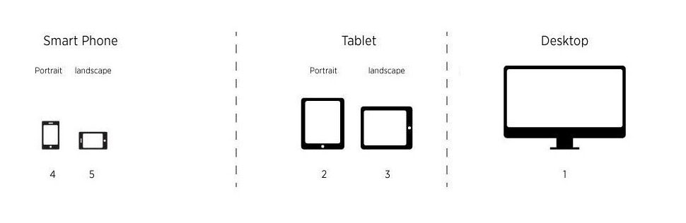
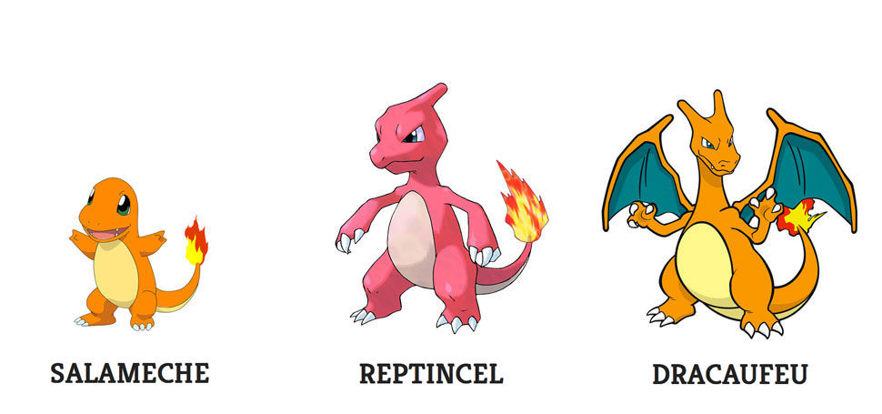
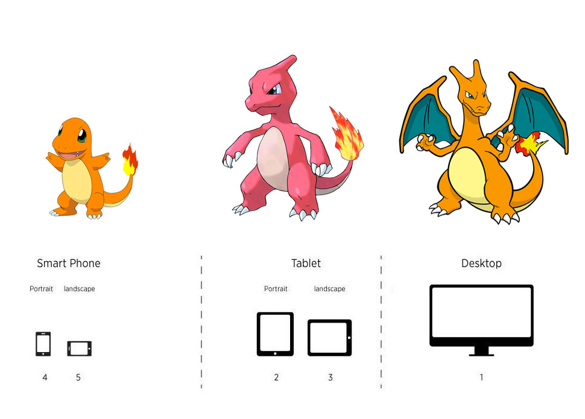

Pokemon
breakpoint
Des mediaqueries, du Javascript et du css
Rencontre ChtiJS #4
David Leuliette
Je code
- Développeur Frontend
- Reponsive designer
Récupérer la taille de l'écran
Javascript
if ($(window).width() >= 640) {
//desktop
} else {
//mobile
}Ce n'est pas une solution

#1
Javascript pour le comportement
CSS pour le style de la page
#1
breakpoint.scss
// Media Queries
$small-screen: 641px;
$medium-screen: 1280px;
$large-screen: 1440px
$screen: "only screen";
$small: "only screen and (min-width: #{$small-screen})";
$medium: "only screen and (min-width:#{$medium-screen})";
$large: "only screen and (min-width:#{$large-screen})";
$landscape: "only screen and (orientation: landscape)";
$portrait: "only screen and (orientation: portrait)";breakpoint.css
@media only screen and (min-width: 641px) {
...
}#2
Importance du naming
#2
#2
#2
#2
Placer un élément #media-query--name dans le DOM
breakpoint.scss
#media-query--name:after{
content: "salameche";
}
@media #{$small} {
#media-query--name:after{
content: "reptincel";
}
}
@media #{$medium} {
#media-query--name:after{
content: "dracaufeu";
}
DEMO TIME
Pour résumer
- Importance du nommage
- Choisir un élément #media-query--name
- Récupérer les informations avec getComputedStyle & getPropertyValue